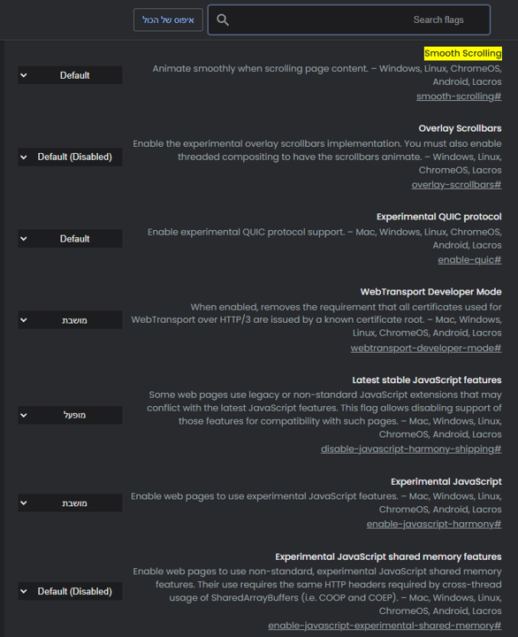
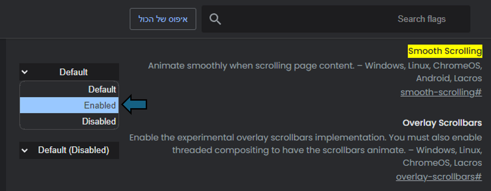

Features And Settings
Smooth Scrolling [Feature] Doesn't Work?
Here is a guide that may help enable this feature if it does't work...
Enter the following address into the searchbar in the top of the browser:
chrome://flags/#smooth-scrolling and press enter.
There change the option from Default or Disabled to
Enabled and restart the browser.
After those steps the feature will be supported on the browser.
Images Walkthrough:
Enter
chrome://flags/#smooth-scrolling to the searchbar and press
enter.
After we pressed enter the following window will appear:

Next we will click the on the dropdown next to
Smooth Scrolling select the Enabled option:
A pop-up message appears notifying us that the changes will be applied next time
we will restart the browser, with an option to restart the browser.
We click this restart button and the browser will be restarted
(make sure to save any important unsaved work just incase).
Now the feature is enabled and should work on the browser's websites that uses this feature.